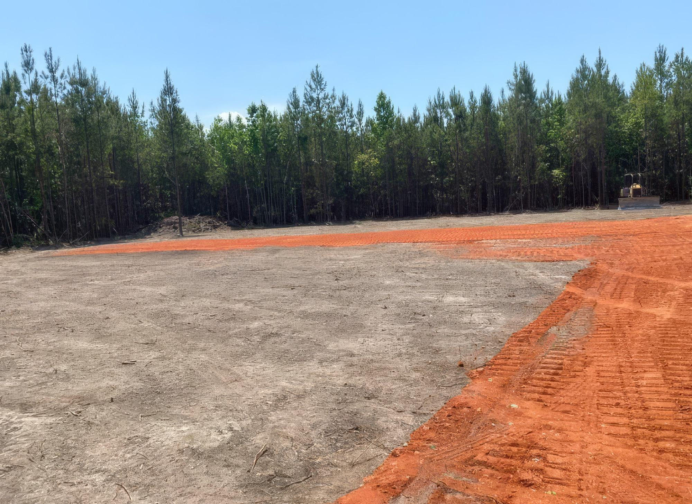
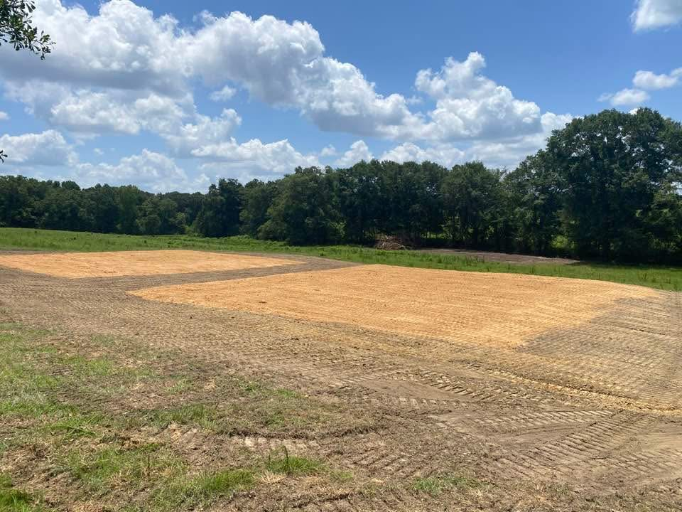
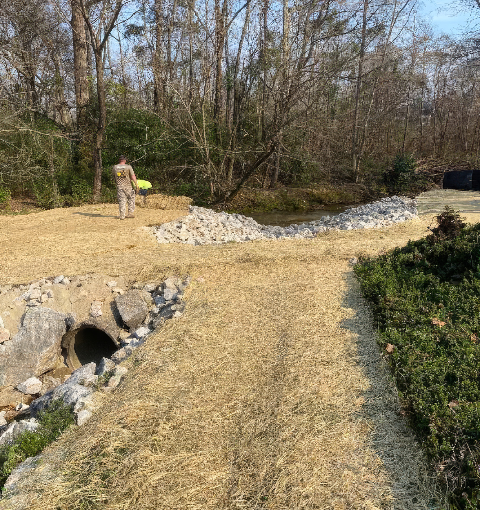
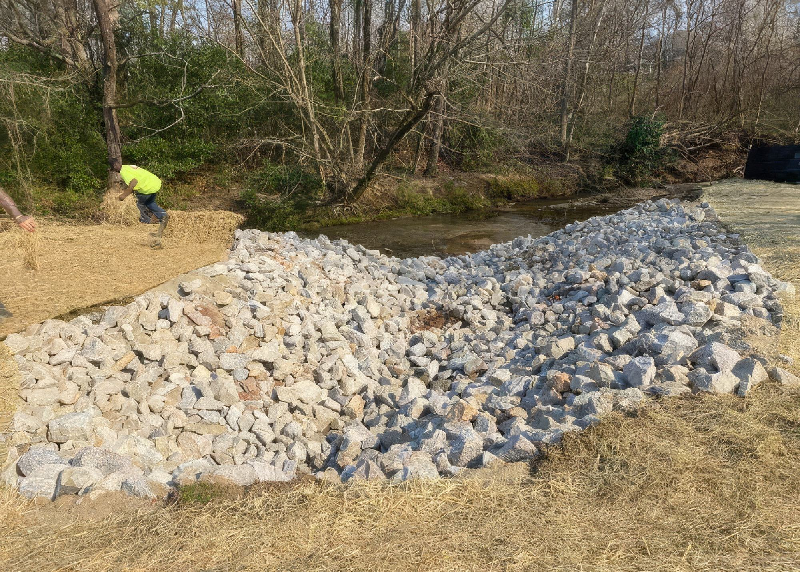
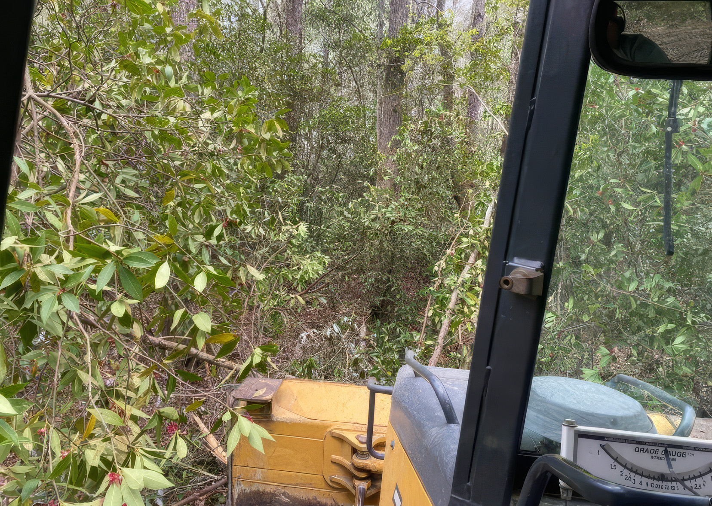
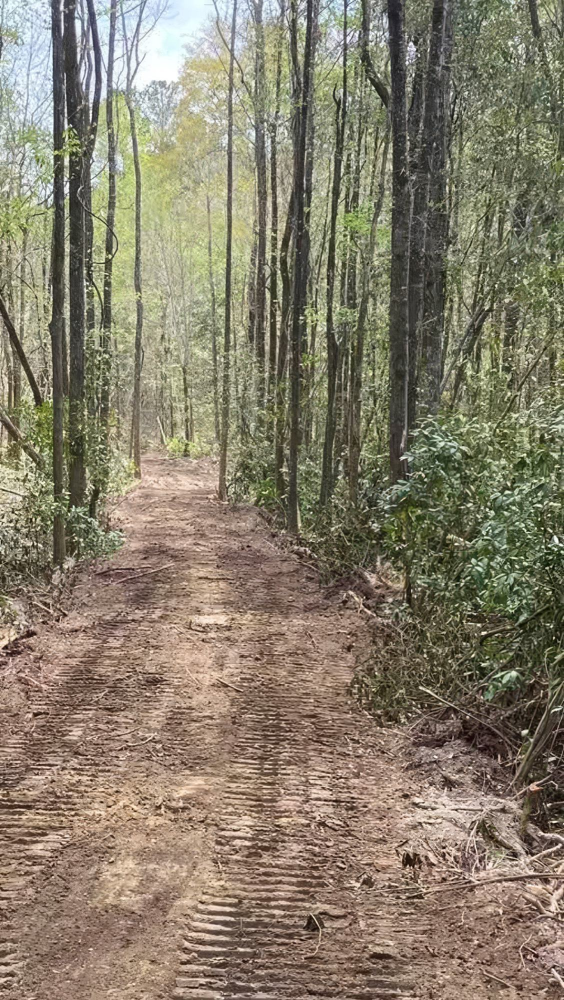
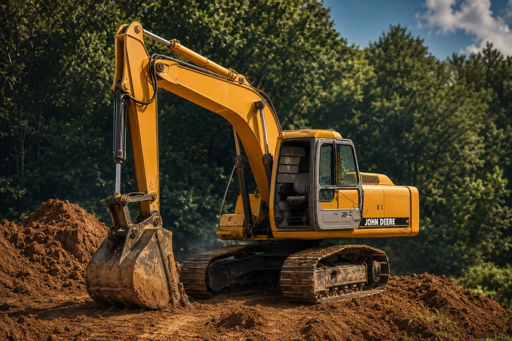

Wolf Creek Farms helps landowners clear, shape, drain, build, and improve property. This page highlights the kind of work that turns rough land into usable ground.
This gallery will grow as more projects are completed and photographed. For now, it gives customers a visual feel for Wolf Creek Farms’ land work.

Good land work improves access, function, drainage, and long-term use. The goal is not only to move dirt. The goal is to make the property work better.
Clear the land and open the property for future use.
Shape the site with access, drainage, and material needs in mind.
Leave the property cleaner, more usable, and ready for the next step.
These photos give visitors a visual path into each Wolf Creek Farms service. Click any project to learn more about that type of work.

Preparing ground for homes, shops, barns, and future building sites.

Clearing and shaping property for the next phase of use.

Improving rough land so it can support access, building, or future improvements.

Opening up overgrown areas and making the land easier to access and use.

Shaping land and water areas for rural property improvement.

Improving rough or undeveloped areas with practical land work.

Helping water move where it needs to go before it damages the property.

Correcting water problems that affect roads, pads, slopes, and access.

Improving rural access roads, hunting property, and usable land with practical site work.

Building and improving access roads for homesites, farms, and hunting land.

Removing old structures, debris, and rough areas so land can be used again.
Creating cleaner, more usable property for the next phase.
Wolf Creek Farms works on practical land improvement projects for homeowners, farms, hunting properties, rural landowners, and commercial sites.
House pads, shop pads, barn pads, mobile home pads, RV lots, and building site preparation.
Driveways, farm roads, hunting roads, road repair, clay gravel, grading, and access improvement.
Drainage, washout repair, erosion control, culvert support, ditch shaping, and rip rap.
Hunting land development, food plots, fire breaks, clearing, trails, and property cleanup.
The strongest project photos are the ones that show practical improvement: better access, cleaner ground, improved drainage, and land ready for what comes next.

From land clearing and site prep to roads, drainage, ponds, clay gravel, demolition, and hunting land development, Wolf Creek Farms can help improve your property.
Request a Free Estimate Call Russ